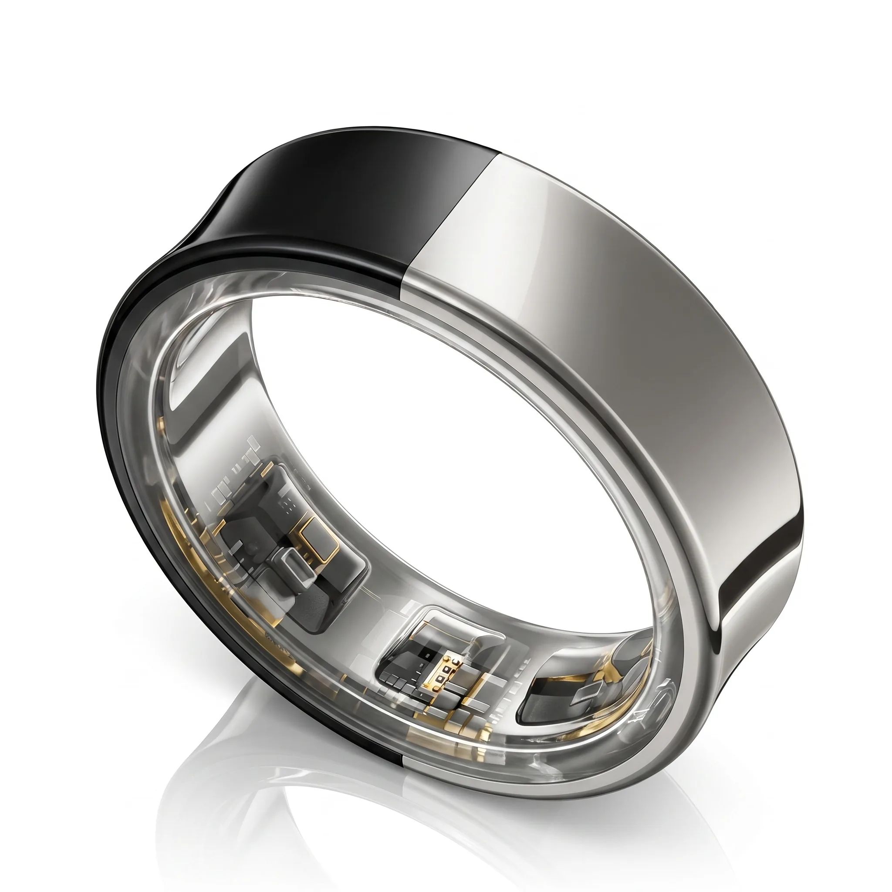
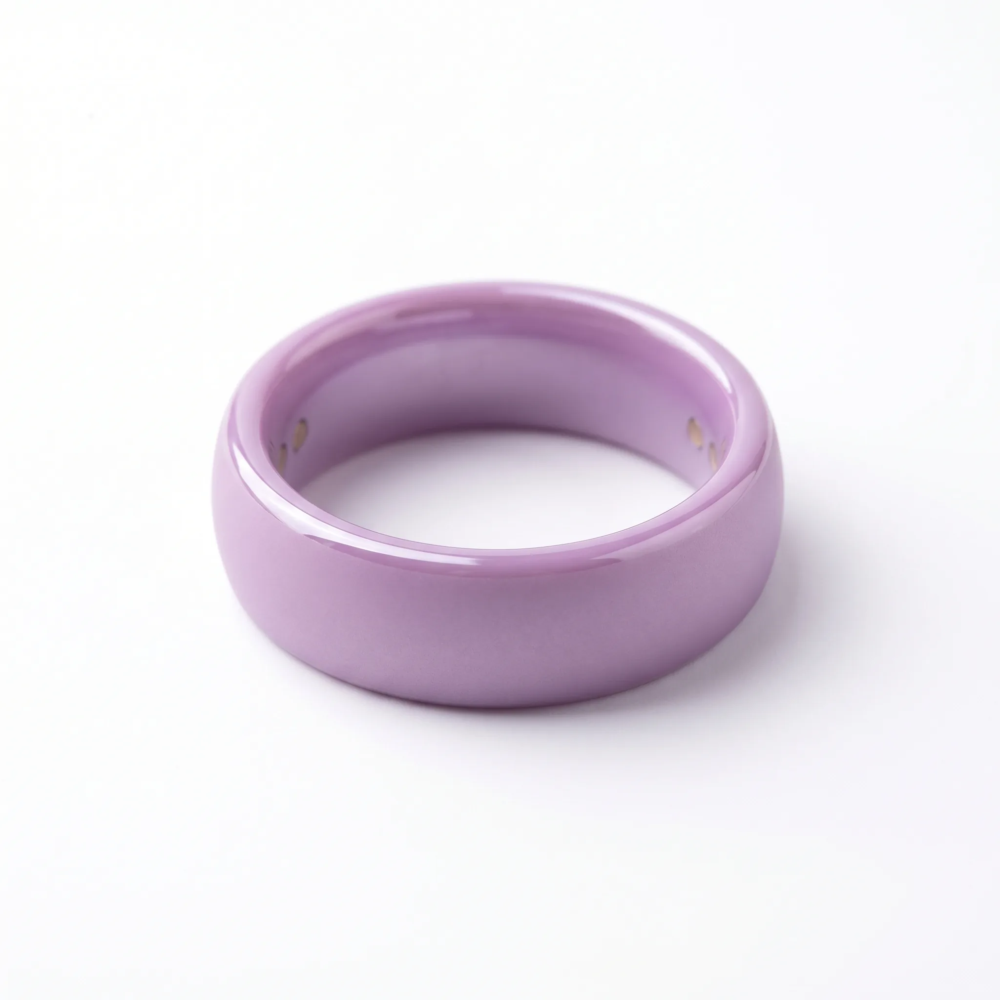

About TALYX
From Jewelry Manufacturing
to Smart Jewelry Innovation
TALYX was not born as a brand. It was born as a material capability, refined over 27 years, and now focused on a single mission: making smart jewelry beautiful.
Our Story
Jewelry Manufacturing Begins
Founded as a fine jewelry manufacturer. Rings, pendants, bracelets, brooches — crafted for brands across the world. Ceramic becomes a core material competency early on.
Ceramic Color Mastery
Developed proprietary ceramic color formulation capabilities. Custom color matching. Surface finishing science. Precision manufacturing at jewelry scale. The foundation for everything that followed.
Multi-Color Ceramic Innovation
Pioneered dual-color ceramic fusion techniques. Developed proprietary bonding processes for multi-layer ceramic rings. Patent applications filed for material processes.
Smart Jewelry Research Begins
Recognized the emerging smart ring market — and its design problem. Began researching: can ceramic house sensors? Can it transmit signals? Can it be manufactured at smart-ring tolerances? Answer: yes to all three.
TALYX Lab Founded
Established TALYX as a dedicated smart jewelry innovation lab. Separate from manufacturing operations. Focused purely on materials, design, and partner collaboration.
Today
Working with smart ring brands worldwide. 20+ ceramic colors. 10 surface finishes. 6 advanced techniques. A full innovation platform for the next generation of smart jewelry.
27
Years Jewelry
Manufacturing
20+
Ceramic Color
Formulations
2019
Smart Jewelry
Research Began
For 27 years, we manufactured fine jewelry for brands across the world. We learned ceramic before ceramic was cool. We mastered color formulation, surface finishing, and precision manufacturing at a scale most designers never see.
In 2019, we saw something. Smart rings were emerging, but their design language was stuck. Titanium. Black. Matte. Repeat. The material that had defined fine jewelry for centuries — ceramic — was almost entirely absent from the smart ring conversation.
We began researching. Can ceramic house sensors? Can it transmit signals? Can it be manufactured at the tolerances smart rings demand? The answer to all three was yes — but it required a different approach. Not jewelry manufacturing. Not electronics manufacturing. Something new.
Our Philosophy
Smart jewelry should be jewelry first.
A ring worn every day is not a gadget. It's one of the most personal objects a person owns. It sits on their hand through meetings, meals, sleep, and moments that matter. The way it looks, feels, and wears is not secondary to its function — it is fundamental to its success.
This conviction shapes everything we do. We don't start with the sensor and design around it. We start with the hand it will sit on, the wardrobe it will complement, and the feeling it should create. Technology serves the jewelry. Not the other way around.
Core Capabilities
Material R&D
Ceramic Science
Custom color formulation. Multi-layer fusion. Surface science. 20+ active ceramic compounds for smart ring applications. Pantone matching capability.
Design
Jewelry-First ID
Industrial design that starts with proportion, ergonomics, and aesthetic intent. CAD-to-prototype with ceramic-native design rules built on 27 years of jewelry making.
Production
Scalable Manufacturing
Ceramic production at smart-ring tolerances. Quality systems built on decades of jewelry manufacturing precision. From prototype to production, under one innovation framework.


Design Sketch & Finished Product

Work with us
We're looking for smart ring brands who believe materials matter.